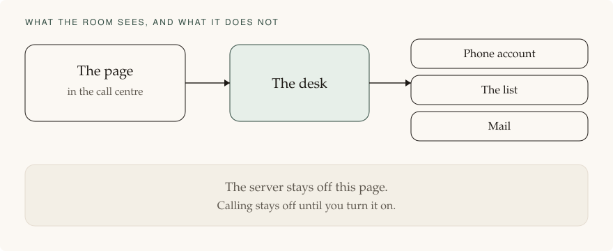

Roadmap · page 3 of 3
The build is in draft. Calling is off. Nothing on this page, or in those drafts, places a live call by itself.
This public site is the briefing. The riding is its own product, in its own private repository. That product has not been started. Calling is off.

The phone line, the trunk, the call control, fax, and mail are separate connections. The desk chooses them from configuration. Business rules do not call a vendor by name.
The customer grant from a Connect button is stored encrypted. A raw key is not stored in the clear. If a vendor has no Connect button, that step stays Not connected. The desk registers its own callbacks. The room is not sent to a vendor page to paste an address.
| Piece | Choice |
|---|---|
| Page and desk | Node 24, TypeScript 7.0.2. TypeScript has no long-term line, so this is the current stable release. |
| Records | Postgres only. Not flat files, and not a laptop database, for the riding. |
| Server | Ubuntu 26.04. The list, the notes, and the removal list stay on a machine in Canada. Hillsboro is not used for this riding. Cloudflare's name lookup and front door have no charge, and the list is not cached there. A customer’s own Ubuntu machine is a second profile only if it is in Canada and passes the same checks. A laptop is for building only. |
| Front door | The database is not on the public internet. The page is reached through the outer firewall. Port 8080 is not open. |
| Phone billing | A riding profile may dial when the account bills by the second or in steps of six seconds. No all-in-one provider with true per-second billing is confirmed, so six seconds is allowed for now. VoIP.ms publishes six-second billing for Canada and is the riding candidate. Telnyx publishes 60-second billing, says it no longer offers six-second billing, and must not carry this riding. An account that rounds up to a full minute throws before any network call. |
Coding help on the Pro plan is spent until 1 October 2026. This product's repository has not been created. Nothing in it can dial, because it does not exist yet.
No live call has been placed from this work. True per-second billing is not confirmed. Six-second billing is the working rule until a one-second account is found.